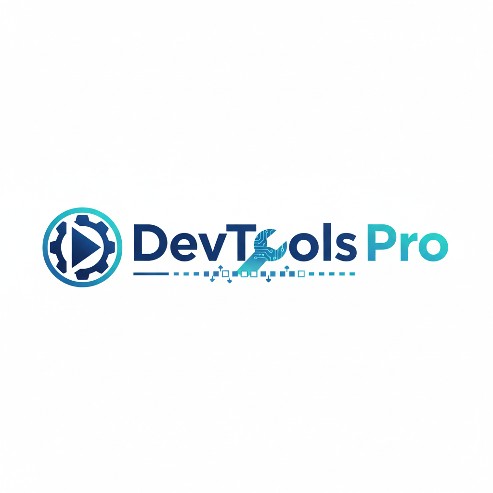

Fora do Loop
O podcast para estudantes de tecnologia que querem sair do loop infinito.
Episódio da Semana
1 de Outubro, 2025
Como sair da síndrome do impostor na Tech
Neste episódio, conversamos com desenvolvedores experientes sobre como lidar com a síndrome do impostor, compartilhando estratégias práticas e histórias inspiradoras.
Ouvir AgoraNossos Patrocinadores
Tech Academy
Plataforma de cursos para devs.

DevTools Pro
Ferramentas para desenvolvedores.
Code Coffee
Café especial para programadores.
Siga nas Redes Sociais
Não Perca Nenhum Episódio
Inscreva-se na nossa newsletter e receba notificações de novos episódios e conteúdos exclusivos!